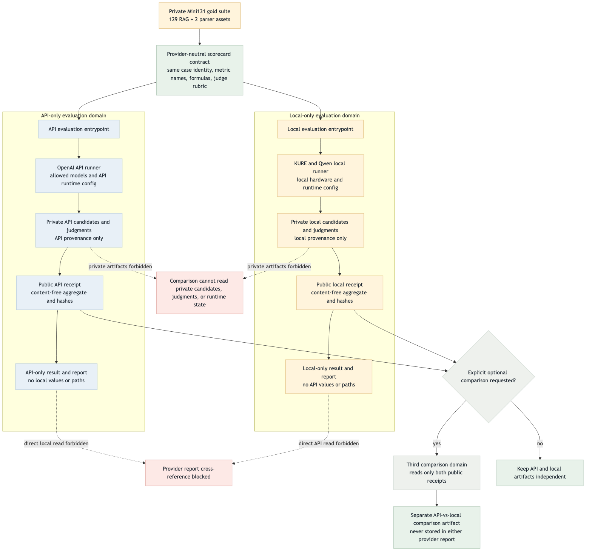
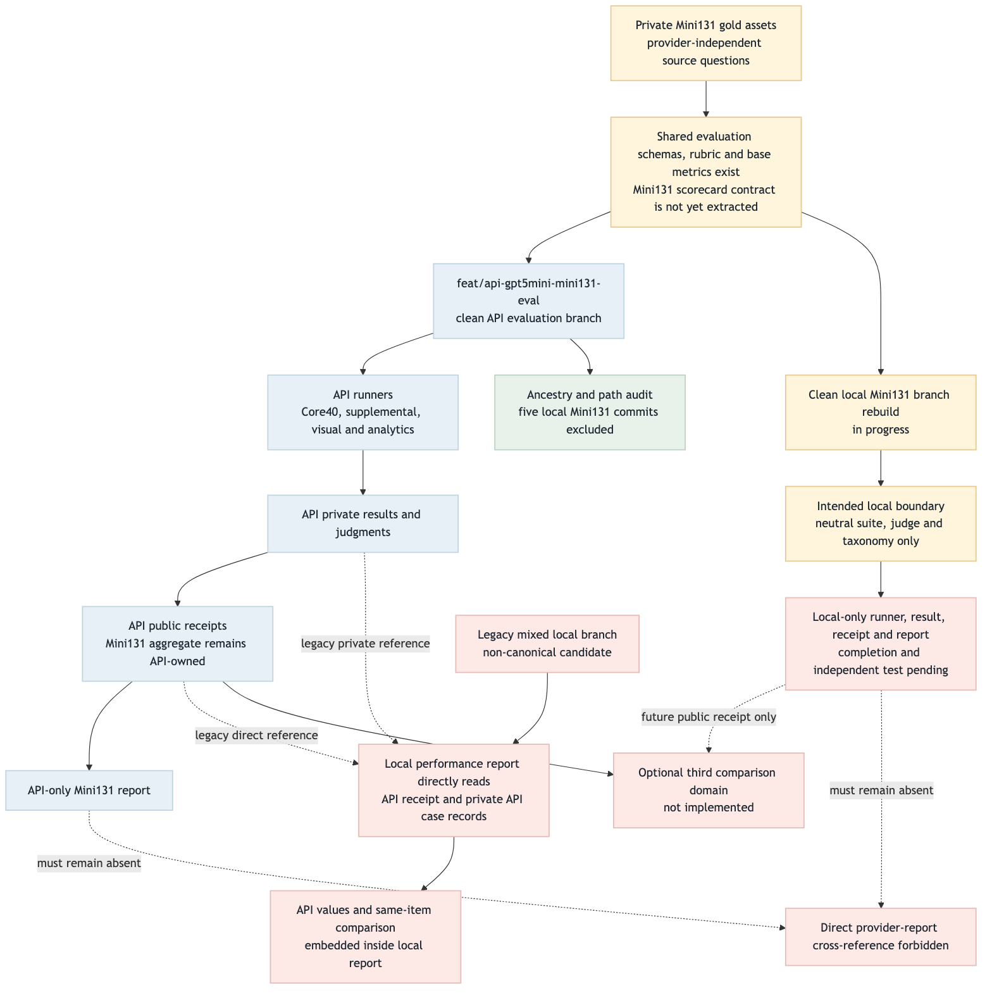

API / Local evaluation provider boundary
API CLEAN
LOCAL CLEAN IN PROGRESS
LEGACY MIXED NON-CANONICAL
OVERALL PARTIAL
5 / 5local Mini131 commits excluded from API ancestry
0local-only path/token matches in API diff
568repository tests passed
2provider reports that must stay independent
공통 영역은 case identity, metric key, 산식, judge rubric, taxonomy만 소유한다. API와 local은
runner, provider 설정, private 결과, public receipt, 결과 JSON과 HTML을 각각 소유한다.
비교는 필요할 때만 제3영역에서 양쪽 public receipt 두 개를 읽어 별도 artifact로 생성한다.
Target Flow
{kind=link}

- 동일 scorecard contract, 서로 다른 provider 실행과 결과
- provider 보고서 간 직접 참조 금지
- private candidate·judgment·checkpoint 교차 사용 금지
- optional comparison은 public receipt만 읽는 별도 영역
Current Implementation Flow
{kind=link}

- clean API branch와 API-only 평가 artifact는 검증 완료
- clean local branch는 neutral 계약만 import하도록 재구성 중
- Mini131 pure scorecard module은 아직 API assembly/report에서 추출되지 않음
- legacy mixed local report는 API receipt와 private API ledger를 직접 읽어 비정상
Target vs Current Gap
| ID | Target | Current evidence | Status | Catch-up proof |
|---|---|---|---|---|
| B1 | API 전용 runner/result/receipt/report | clean API branch; local Mini131 ancestry와 전용 diff 없음 | MATCHED | focused/full tests와 branch audit 유지 |
| B2 | provider-neutral Mini131 scorecard | base metrics는 공통이나 judge·taxonomy·score helper가 API assembly/report에 결합 | GAP | pure contract 추출 + 양 provider parity test |
| B3 | Local 전용 runner/result/receipt/report | clean local rebuild 진행 중 | IN PROGRESS | API path·receipt·private ledger 참조 0건 |
| B4 | provider report 직접 참조 금지 | legacy mixed local report가 API public/private 결과를 직접 읽음 | GAP / LEGACY | clean local을 canonical로 지정 |
| B5 | public receipt 전용 제3 comparison 영역 | 미구현 | OPTIONAL GAP | 독립 입력 schema와 artifact path |
| B6 | evaluation provider CI guard | stack import guard만 있고 evaluation I/O/report guard는 없음 | GAP | forbidden import/path/field 정적 검사 |
Done / Not Done Priority
Score = upstream(0–4) + isolation(0–4) + validation(0–2) + delivery(0–2) + risk penalty(0~-3).
| Rank | Unit | Status | U | I | V | D | R | Score | Next action |
|---|---|---|---|---|---|---|---|---|---|
| 1 | clean API-only branch | DONE | 4 | 4 | 2 | 2 | 0 | 12 | API canonical candidate 유지 |
| 2 | provider-neutral scorecard extraction | NOT DONE | 4 | 4 | 2 | 2 | 0 | 12 | pure contract와 parity test |
| 3 | clean local-only evaluation | IN PROGRESS | 4 | 4 | 2 | 2 | -1 | 11 | API reference 제거 후 독립 검증 |
| 4 | evaluation provider CI guard | NOT DONE | 3 | 4 | 2 | 1 | 0 | 10 | import/path/report 금지 규칙 자동화 |
| 5 | legacy mixed non-canonical marker | NOT DONE | 2 | 4 | 1 | 1 | 0 | 8 | replacement handoff 명시 |
| 6 | optional comparison domain | OPTIONAL | 1 | 2 | 1 | 2 | -2 | 4 | 양 provider 완료 후 별도 구현 |
Scoring Criteria
| Criterion | Range | Meaning |
|---|---|---|
| Upstream weight | 0–4 | 후속 실행·평가·보고서의 의존도 |
| Isolation value | 0–4 | provider와 private artifact 경계를 보호하는 정도 |
| Validation value | 0–2 | 자동 회귀 검출과 재현성 |
| Delivery value | 0–2 | 팀이 독립 결과를 실행하고 읽을 수 있는 정도 |
| Risk penalty | 0~-3 | private 결합, 결과 재작성, 비교 오해 위험 |
Color Semantics
Greenvalidated common control path
BlueAPI/external provider-owned path
Amberlocal/private/review/in-progress path
Redblocked, forbidden, legacy, or gap
Graydecision or optional comparison helper
Validation
- API branch HEAD:
514e5d2cfb5d97d60da58d7f0f62ae893f8e1666 - Excluded local Mini131 commits: 5/5
- API stack: 23/23 PASS; API matrix + boundary: 15/15 PASS
- Evaluation: 177/177 PASS; repository: 568/568 PASS; private fixture 8 SKIP
git diff --check: PASS- Mermaid CLI 11.15.0: target 1568×1476, current 1568×1580 PNG render PASS
- Headless Chromium: 7/7 headings, 2/2 images, legend and all required tables visible
- Horizontal overflow: false; page errors: 0; full-page screenshot: 1440×4266
Overall verdict: PARTIAL.
API 전용 경계는 검증됐다. 전체 MATCHED 전환은 provider-neutral Mini131 scorecard 추출,
clean local branch 완료, evaluation provider CI guard가 모두 통과한 뒤에만 가능하다.
Optional comparison 구현은 필수 gate가 아니다.